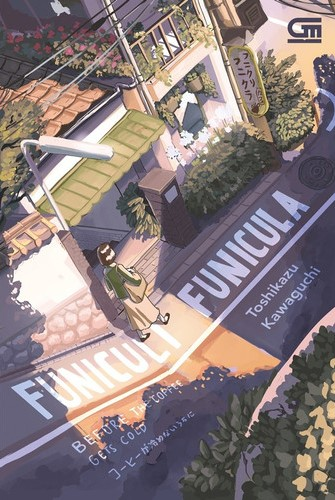

| Home | Best Seller |
|  | Judul : Funiculi Funicula (Before the Coffe Gets Cold) Penulis : Toshikazu Kawaguchi Tahun Terbit : April 2021 Jumlah Halaman : 224 halaman Penerbit : Gramedia Pustaka Utama Harga : Rp70.000 |
Sinopsis Novel Before The Coffee Gets Cold |
| Kafe yang terletak di sebuah gang sempit di kota Tokyo ini bernama Funiculi Funicula. Di sana, orang-orang terbukti bisa pergi kembali ke masa lampau,
dan memperbaiki kesalahan yang sudah mereka buat. Testimoninya juga sudah cukup banyak dari berbagai macam kalangan. Misalnya, ada wanita yang ingin memperbaiki hubungannya dengan mantan kekasihnya setelah mereka bertengkar hebat. Ada juga perawat rumah sakit yang menyesal karena tidak sempat membaca surat sang suami ketika dia sakit, dan ingin kembali ke masa lalu hanya untuk membaca surat tersebut. Di sana, orang-orang tidak hanya pergi menjelajahi masa lalu mereka untuk memperbaiki kesalahan yang mereka telah buat. Funiculi Funicula juga mengizinkan pengunjungnya untuk kembali ke masa lampau, untuk menikmati momen-momen yang pernah terjadi pada masa tersebut. Contoh, seorang kakak ingin pergi ke masa lalunya untuk bertemu dengan adiknya yang sudah tiada. Ada juga sesosok ibu menjelajahi memorinya sendiri, untuk melihat anaknya yang mungkin saja tidak mengenal ibu tersebut. Dan masih banyak lagi orang-orang lain yang pergi ke masa lalunya sendiri. Tetapi, tentu saja perjalanan menuju masa lalu bukan tanpa syarat. Setiap pengunjung Funiculi Funicula wajib mengikuti syarat dan ketentuan yang diberikan oleh kafe tersebut jika ingin menjelajahi masa lampau mereka. Jika tidak, mereka tentunya dilarang untuk pergi ke masa lalu. Syarat pertama yang mereka perlu ketahui adalah pengunjung harus duduk di kursi yang sudah ditentukan oleh kafe tersebut. Syarat kedua yaitu apapun yang mereka lakukan di masa lalu, tidak akan mengubah apapun di hidup mereka saat ini. Dan syarat ketiga sekaligus syarat terakhir adalah pengunjung wajib menenggak habis secangkir kopi “spesial” dari Funiculi Funicula, sebelum kopi itu menjadi dingin. 3 syarat tersebut wajib pengunjung pahami dan terapkan jika mereka memang ingin melakukan perjalanan ke masa lalu masing-masing. Syarat-syarat tersebut memang tidak terlihat membebani pengunjungnya. Namun, sempat terbesit ke dalam pikiran beberapa orang terkait kejanggalan dari persyaratan tersebut. Kendati demikian, tetap saja syarat-syarat ini tidak menyurutkan keinginan orang-orang untuk pergi ke masa lalu. Ini menimbulkan beberapa pertanyaan, khususnya mengenai syarat kedua. Jika orang tidak bisa mengubah apa yang terjadi pada hidup mereka saat ini, lantas mengapa mereka masih memaksa untuk melakukan perjalanan ke masa lampau? Apakah hal ini layak untuk tetap dilakukan kendati tidak mempengaruhi apa-apa dalam hidup mereka? |
Review Novel Before The Coffee Gets Cold |
| Berdasarkan sinopsis di atas, novel Before The Coffee Gets Cold mungkin kurang cocok untuk dibaca kalangan anak remaja di bawah usia 15 tahun. Terlebih terdapat sejumlah pesan moral dan
juga pemahaman filosofis yang belum tentu dapat mereka pahami dengan mudah. Tentu saja novel ini bebas dibaca oleh siapa saja bagi mereka yang tertarik terhadap tulisan ini. Hanya saja alur di dalam novel ini bergerak cukup lambat, sehingga tidak semua orang betah jika mereka harus membaca sesuatu yang dijelaskan secara perlahan. Selain itu, terkadang penjelasan yang dipaparkan di dalam novel Before The Coffee Gets Cold terkesan dibuat terlalu tersurat dan gamblang, alih-alih disajikan secara tersirat dan membiarkan pembacanya menginterpretasikan pesan di dalam cerita tersebut. Bukan hal yang buruk ketika seseorang terlalu deskriptif dalam menjelaskan cerita dalam sebuah karya tulis. Namun, banyak pembaca yang ingin mengimajinasikan alur cerita dengan perspektif mereka masing-masing. Di sini, sejumlah pembaca merasa kalau Toshikazu Kawaguchi gagal melakukan hal tersebut. Ending dari novel Before The Coffee Gets Cold juga terbilang biasa saja, tidak ada sesuatu yang dapat dikatakan spesial. Untuk aspek yang satu ini, pendapat orang-orang juga berbeda-beda. Banyak pembaca berpendapat kalau ending novel ini sesuai dengan karakteristik yang disajikan dari novel tersebut sejak awal. Tetapi, sejumlah pembaca juga berharap untuk mendapatkan ending yang memuaskan setelah mengikuti cerita ini dari awal hingga akhir. Ending yang diceritakan oleh Toshikazu Kawaguchi kepada pembaca terbilang terlalu bermain aman dan kurang berani mengambil resiko. Meskipun begitu, novel Before The Coffee Gets Cold diakui banyak pembaca berhasil menyajikan cerita dengan tema time travel yang menarik dan segar bagi pembaca. Konsep seperti ini dianggap sebagai sesuatu yang baru dan orisinil, belum banyak ditemukan oleh pembaca novel. Selain aturannya yang cukup jelas ketika melakukan perjalanan ke masa lampau, terdapat unsur realisme yang juga cukup disukai oleh banyak pembaca: kita tidak bisa mengubah masa lalu dan berharap itu akan mengubah hidup mereka di masa sekarang. Ide ini belum banyak tercetus dalam karya bertemakan time travel. Yang paling menonjol dari novel Before The Coffee Gets Cold tentunya adalah ceritanya yang hangat dan menyentuh hati. Karakter-karakter di dalamnya merupakan sosok manusia biasa yang tidak luput dari kesalahan, dan berharap bahwa mereka dapat memperbaiki kesalahan mereka di masa lalu. Mereka menyadari betul bahwa apa yang mereka lakukan tidak akan mengubah apa-apa. Namun, setelah kembali dari masa lampau, orang-orang ini merasakan kelegaan yang luar biasa, seakan kesalahan mereka diampuni meskipun kenyataannya tidak. Terkadang yang manusia butuhkan hanyalah menghadapi masa lalu mereka dengan pengalaman mereka di masa sekarang. Tidak perlu mendapat pengampunan, selama mereka sudah merasa bebas dari belenggu yang mengikat mereka untuk bergerak bebas. Hal ini amat manusiawi, dan tentu pernah dialami oleh banyak orang. Klise memang, tetapi eksekusi yang dilakukan oleh Toshikazu Kawaguchi terbilang sukses karena membuat karakternya terlihat nyata dan dapat dibayangkan keberadaannya jika mereka ada dalam dunia kita. Jadi, dapat disimpulkan bahwa novel Before The Coffee Gets Cold diperuntukan untuk orang-orang yang memiliki kesabaran dalam membaca, serta tidak ingin terburu-buru ketika menghadapi suatu cerita. Kisah yang dituangkan sang penulis di dalamnya hanya bisa dirasakan ketika pembaca mau menelaah secara perlahan isi dari novel tersebut, serta bisa berkompromi dalam sejumlah kekurangannya. |